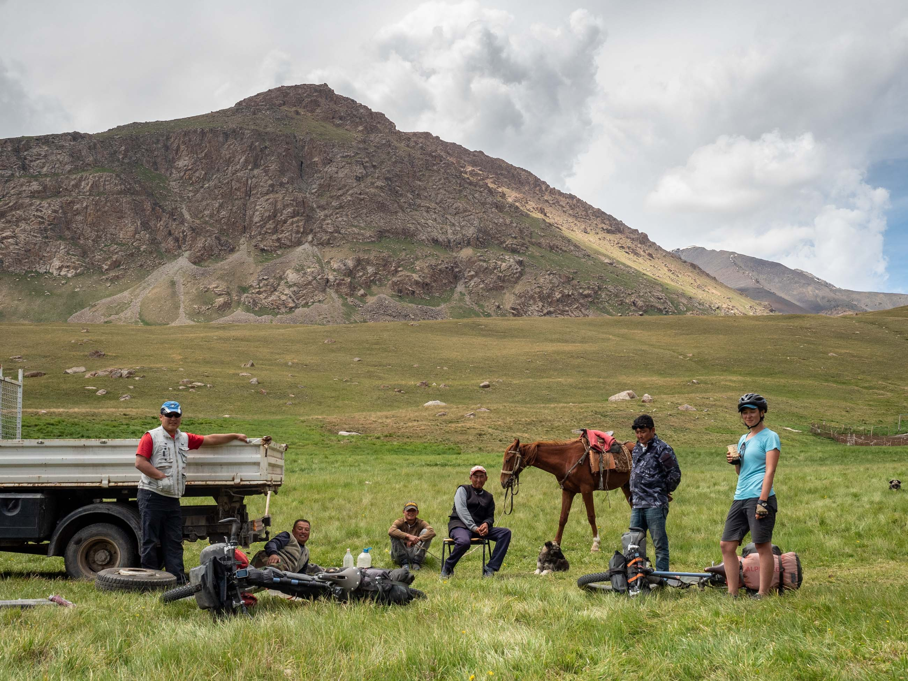

Kyrgyzstan
Kyrgyzstan is a beguiling pedalling destination. It’s a land of change where decaying soviet architecture contrasts with a nomadic culture that sees families and animals return to yurts dotted across fenceless pastures each summer. In small villages that sit below jaggy snow capped mountains vodka is downed in corner stores opposite mosques.
Friendly smiles and hi-fiving kids greet cyclists zooming by on their way to the idyllic single and double track trails that criss-cross this land.
2018, July 3 – August 7. 1566km, 29,541m up, 27,251m down.
22 July 2018, Kyzyl-Oi main street

3 August 2018, Sulayman Mountain, Osh
22 July 2018, Playing Kokpar, Kyzyl-Oi

24 July 2018, yurts and open pastures, Karakol valley
20 July 2020, perfect single track formed by horses after leaving Song-kul
18 July 2018, yurt camp, Song-kul

18 July 2018, confident kids and on point fashion, Song-kul

16 July 2018, roadside mausoleums

10 July 2018, sharing some mysterious fermented beverages
16 July 2018, heading towards Baetov
14 July 2018, trying to out pedal a brewing thunder and hail storm

10 July 2018, heading down the valley after Arabel pass

9 July 2018, Idilic camping, after Djuuku pass

5 July 2018, hike up to Ala-kul from Karakol
9 July 2018, heading into Djuuku valley
5 July 2018, freshly baked Samsa, a potato and onion filled pastry, from a street vendor in Osh

4 July 2018, urban yurt with wifi, Karakol